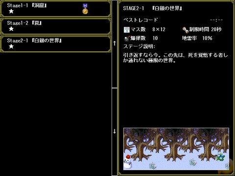
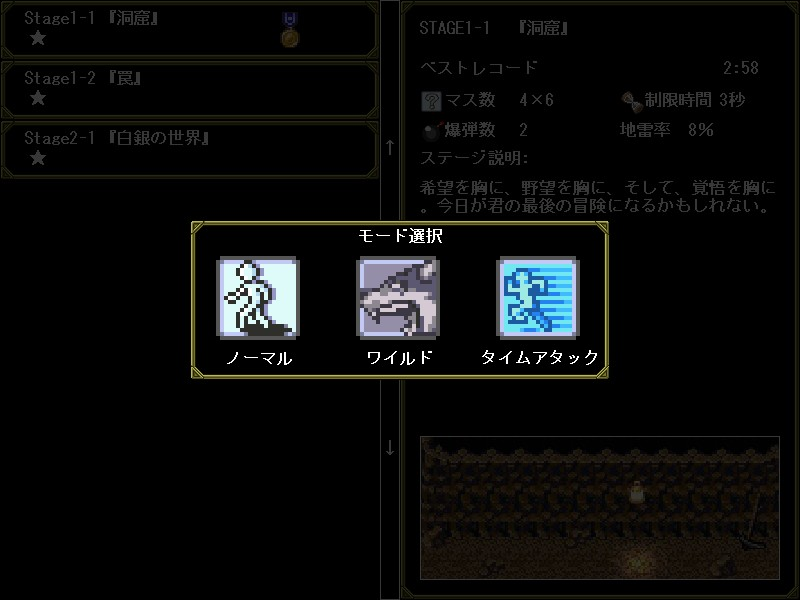

■３．４ ステージセレクト
| |

| １．ステージ選択 |
| |
左側のステージリストにマウスを合わせると、ステージの詳細が表示されます。
ステージをクリアすると他のステージが解禁され、お金を使ってステージを開拓することが出来ます。開拓したステージは自由に探索することが出来ます。
ステージリストの「★」マークはそのステージの難易度を表しています。
|
| ２．モード |
| |

一度クリアしたステージは、次回から３種類のモードからプレイすることが出来ます。モードによって難易度が大きく変わります。
- ノーマルモード……通常のモード。
- ワイルドモード……敵が強くなる。モンスターのアイテムドロップ率が２倍になる。
- タイムアタックモード……時間制限あり。採掘アイテム出現率が２倍になる。
各モードをクリアすると、ステージリスト欄にメダルが出現します。
|
|
|